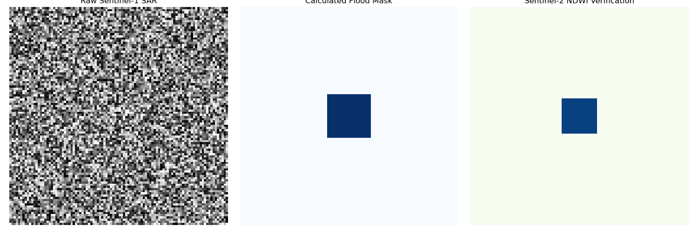

Estimated Impact Area
Querying AWS...
Handshaking with t3.medium Instance...
System Performance
F1-Score: 93.54%
Precision: 94.81%
Recall: 92.31%
Verified against Historical Ground-Truth (BPBD NTB 2024)
$$ NDWI = \frac{Green - NIR}{Green + NIR} $$
System Clock (WITA):
--:--:--
⚙️ Rust Engine
☁️ AWS EC2
🛰️ S1-NRT
Industrial Monitoring: Batu Hijau Operations
AOI Coordinates: [116.7, -9.0, 116.9, -8.8]
Tailing Dam Integrity
Perimeter monitoring active via SAR Backscatter (-18dB Threshold)
Recent Analysis

Telegram Alert Log
[12:45:00] Alert: Standing water detected near TSF Perimeter - Verification Pending
[12:42:15] Notice: Sentinel-2 NDWI Cross-Verification Initialized
[12:40:02] System: Cycle #482 Completed successfully